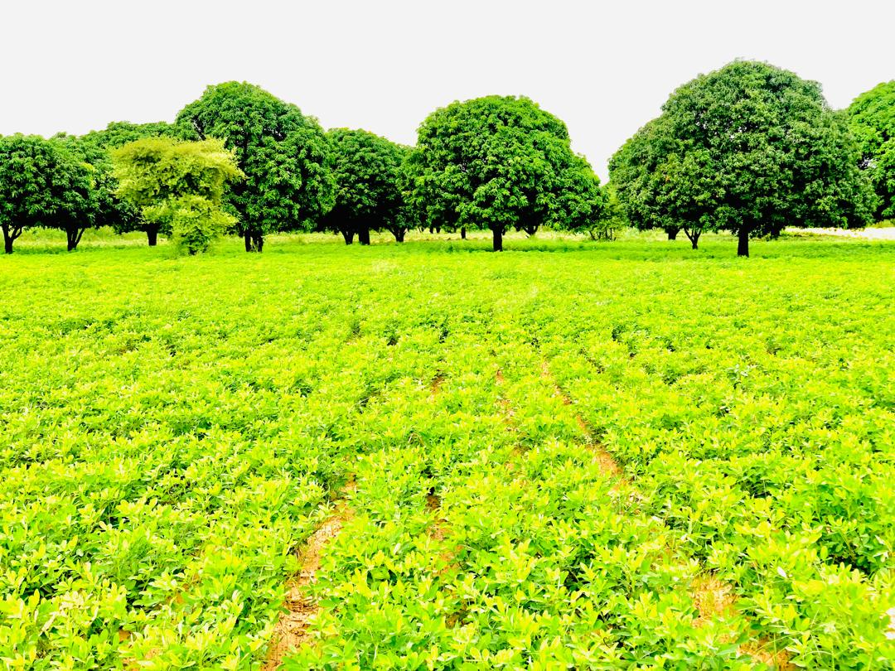

Notre Histoire
AFRICA AGRO SEM est née de la volonté de transformer le potentiel agricole africain en opportunités économiques durables. Fondée au sénégal, l'entreprise a débuté avec des activités agricoles locales, alliant tradition et modernités. Au fil des années, elle s'est diversifée pour englober l'agrobusiness, la logistique, l'immobilier et le e-commerce, devenant un acteur incontournable dans le développent socio-économique du continent.
Nos Valeurs Fondamentales
Nous croyons en une croisance responsable et inclusive. Durabilité (préservation des écosystèmes), innovation (intégration de technologies agricoles et digitales), transparence (traçabilité des produits) et engagement communautaire (création d'emplois locaux) guitent chacune de nos actions. Chaque décision est prise avec le souci de respecter la terre, les hommes et les générations futures.
.jpg)
Nos Engagements Clés
AFRICA AGRO SEM s'engage à :
Protéger l'environnement via des pratiques agricoles écoresponsables et une logistque optimisée.
Soutenir l'économie locale en valorisant les produits sénégalais à l'international et en collaborant avec les petits producteurs.
Promouvoir la qualité à travers des normes sanitaires strictes et des services fiables (transport, stockage, transformation).

Notre Vision Stratégique
Notre ambition est de devenir un learder panafricain de l'agro-industrie, en connectant les marchés locaux aux dynamiques globales. Nous aspirons à une agriculture africaine résiliente, créatrice d'emplois durables et garante de la souveraineté alimentaire, tout en développant des synergies avec des secteurs complémentaires (immobilier, service, e-commerce).
Domaines d'Expertise Phares
De la production agricole (céréales, élevage, aviculture) à la commercialisation internationale, en passant par la logistique (transport multidal) et l'innovation digitale (plateformes e-commerce), AFRICA AGRO SEM maîtrise toute la chaîne de valeur. Nous intervenons également dansL'installation des chambres froideset les services aux entreprises , offrant des solutions intégrées.

Message à Nos Clients et Partenaires
"Chez AFRICA AGRO SEM, nous cultivons bien plus que des produits : nous cultivons la confiance. Que vous soyez un client, un fournisseur ou un investisseur, rejoignez-nous pour bâtir un avenir où prospérité rime avec responsabilité. Ensemble, récoltons le potentiel de l'Afrique."